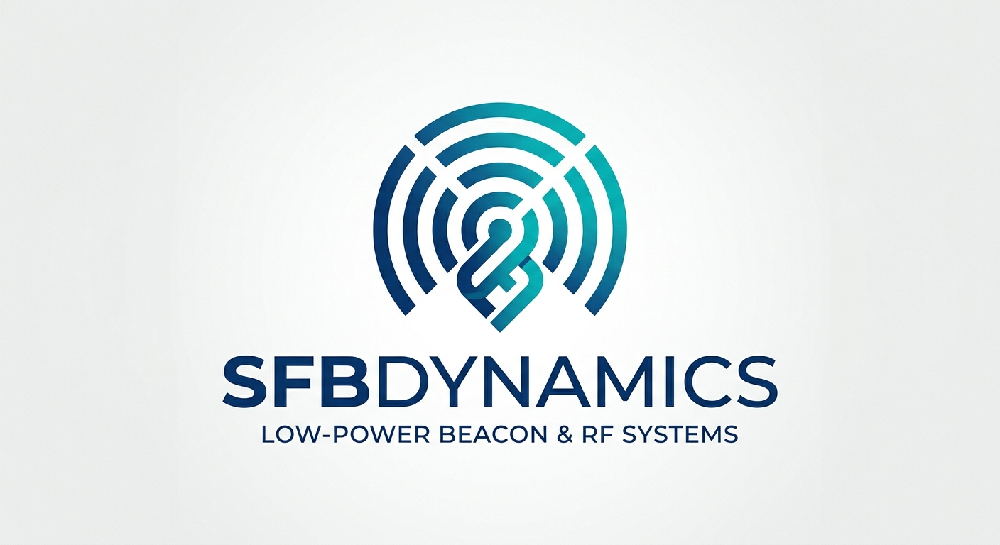

Micro-Scale RF Carrier Generation & Hardware Audio Synthesis
SFB Dynamics develops compact hardware platforms combining real-time polyphonic audio synthesis with precision low-power RF broadcast capabilities.
ARM Cortex-M0+ architecture configured for low-latency MIDI signal routing.
Hardware PWM output configured for medium-wave broadcast band testing (GP14).
16-patch algorithmic sound engine with hardware RC output filtering (GP16).
Test an interactive web simulation of the SFB dual-tone AM synth signal directly in your browser: